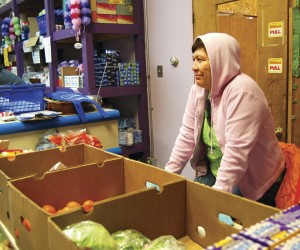
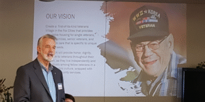
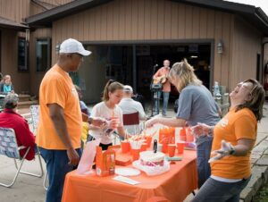
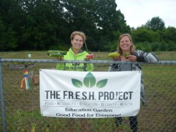

Additional Links
The annual U.S. Venture Open is the nation’s single largest one-day charitable event dedicated to ending poverty. Last year the golf raised $5.24 million for the Basic Needs Giving Partnership within the Community Foundation.
Posted by Jenny Krikava, Community Engagement Manager overseeing the Basic Needs Giving Partnership
Record-breaking new grants of nearly $6 million have been awarded to 225 nonprofit organizations supporting innovative programs helping those in need throughout Northeast Wisconsin. Collaborating nonprofits/organizations were granted funds for programs addressing the root causes of poverty through the community foundations in Green Bay, Fox Valley and Oshkosh.
Funding breakdowns are:
Grants are focused on programs that reduce poverty by creating economic stability, increasing access to education, building family support and social connection, and improving health and wellness. Funding for the grants is generated by the annual U.S. Venture Open, the nation’s single largest one-day charitable event dedicated to ending poverty. In 2019, the event raised $5.24 million for the Basic Needs Giving Partnership, and 100% of every dollar donated is invested in the fund. In the 34-year history of the U.S. Venture Open, $32 million has been granted to regional nonprofits.
“We are excited to be able to provide this level of funding to facilitate and support the unique, collaborative work in the region. We should all should be proud of the hard work happening by all of the organizations receiving grants,” said Greg Vandenberg, Director of Giving and Community Engagement for U.S. Venture. “Poverty is a complex issue that requires complex work to solve it and we need to continue to fund programs that are working to end it.”

The Hunger Task Force was a Leadership Initiative.
A grantmaking match of $800,000 from the J. J. Keller Foundation, $250,000 from Oshkosh Corporation and $200,000 from both ThedaCare and the Thrivent Foundation lead this effort. Three community foundations review and award grants to regional nonprofits that address poverty.
“We continue to be amazed by the generosity of our partners who continue to make significant investments,” Vandenberg said. “They are dedicated to supporting and transforming this regional initiative to address poverty while knowing we are stronger working together.”
Recipients of the Basic Needs Giving Partnership Grants for 2019 are:
2019 Basic Needs Giving Partnership Grants
$5,973,534 in new grant commitments
$4,688,469 in total grants distributed
Community Foundation for the Fox Valley Region
$2,699,853 in new grant commitments
$2,410,354 in grants distributed
NEW GRANTS
Apricity Comprehensive Community Services: $8,000
Planning grant to hire a consultant to assist Apricity Residential Treatment division with the proper steps and procedures in which to become a Comprehensive Community Services (CCS) approved provider. More here
First Time Parent Support Initiative: $9,500
Planning grant to develop and pilot an initiative that ensures a healthy start for children born in our community. Collaborators: Building for Kids, Family Services, Early Intervention of Winnebago & Outagamie Counties, Lawrence University

To staff the emerging Wisconsin Veterans Village with a “navigator” who will help connect veterans to internal and external services appropriate to their needs. Collaborators: Wisconsin Veterans Village Association, Goodwill Industries, ThedaCare, Outagamie County Housing Authority, Fox Valley Technical College More here
Individual Placement Support Services Program (IPS): $101,891 (Year 1 of 3, $212,343 total)
To implement a new evidence-based IPS Services Program that helps those with severe and persistent mental health illness find, keep and thrive in jobs. Collaborators: Valley Packaging Industries, Aspire Vocational Services, Outagamie County Mental Health, Wisconsin Department of Health Services, NAMI Fox Valley – Iris Place
Traumatic Brain Injury (TBI) Support Program: $76,237 (Year 1 of 3, $295,491 total)
To develop and implement a TBI Support Program including services to survivors, whether or not they are living in homeless shelters, and educational programming. Collaborators: SOAR Fox Cities, Pillars, Inc., Harbor House Domestic Abuse Programs, Apricity, Neuroscience Group, Christine Ann Domestic Abuse Services More here
Early Childhood Mental Health Therapy & Consultation: $100,000 (Year 1 of 3, $300,000 total)
To create a consultative approach to provide clinical mental health services to Appleton families and kids from birth through age 5. Collaborators: Catalpa, Community Early Learning Center, Bridges Child Enrichment Center, Appleton Even Start Family Literacy, Appleton Area School District Birth to Five, Early Intervention Birth to 3 Program, UW-Oshkosh Head Start, Child Care Resource & Referral

To strengthen, from the inside out, core Menasha neighborhoods by mobilizing neighbors to address their own neighborhood priorities. Through Neighborhood Partners’ Asset Based Community Development practice, neighbors share their knowledge, skills, interests and concerns with one another in interest groups, neighborly supports, teaching-learning connections, neighborhood organizations, and by working together on community improvement projects. Collaborators: Neighborhood Partners, Menasha Senior Center, Boys & Girls Club of Menasha More here
Outagamie County SAFE Project: $73,000 (Year 1 of 3, $135,000 total)
To fund a new police officer so an officer experienced with specialized training can become the Outagamie County Sheriff’s Behavioral Health Officer in charge of the SAFE Project. Collaborators: NEW Mental Health Connection, Outagamie County Sheriff’s Department, Grand Chute Police Department, Kaukauna Police Department
Ready to Read Menasha: $19,200 (Year 1 of 3, $57,600 total)
To fund a Spanish-speaking outreach specialist to focus on encouraging use of the Elisha D. Smith Public Library by its Latinx community members, while also encouraging use of the library by all families with children in school. Collaborators: Elisha D. Smith Public Library, City of Menasha, Menasha Joint School District, Appleton Public Library
Senior to Senior Connections: $100,000
To take capacity building steps that will lead to long-term viability of the Center while increasing our ability to reach and better serve more at-risk adults who find it difficult to get to the center without supportive services. Hire an executive director who will add new leadership and expertise to help meet future budgetary and program needs of the Center through strategic engagement with community, business and government stakeholders. Collaborators: Thompson Center on Lourdes, St. Paul Elder Services, Hope Clinic
Great Futures 2020: $100,000 (Year 1 of 3, $300,000 total)
To support the addition of two new school-based club sites that combined will serve an average of 200 low-income students each day and a combined total of 400 students each year for five school years beginning September 2020 at Little Chute Middle/Intermediate School and Madison Middle School. Collaborators: Boys & Girls Club of the Fox Valley, Appleton Area School district, Little Chute Area School District More here
Strengthening Families: An Investment in Social Capital: $100,000 (Year 1 of 3, $300,000 total) To establish a presence in the Fox Cities in order to promote systems of natural support for families in crisis, diversion from homeless shelters and deflection from child welfare systems and foster care. Collaborators: Safe Families for Children of Wisconsin, Pillars, Inc., Outagamie County Department of Health & Human Services, Harbor House Domestic Abuse Programs, Appleton Alliance Church
MULTI-YEAR GRANTS
Coming Home to Healthcare: $60,020 (Year 3 of 3, $295,000 total)
Expand the scope and reach of the Partnership Community Health Center’s clinic at COTS, serving new vulnerable patients living at or below the poverty level, reducing barriers to healthcare and introducing health literacy. Collaborators: Partnership Community Health Center, COTS
Enhancing Educational Programming for 3-5 Year Olds: A Mindfulness-Based Kindness Project $81,775 (Year 2 of 3, $296,450 total)
To reduce poverty-based achievement gaps by implementing and testing a mindfulness-based curriculum with preschoolers. Collaborators: Community Early Learning Center of the Fox Valley, Lawrence University, UW-Fox Valley, UW-Madison-Healthy Minds Innovation Team
Youth Housing: $90,000 (Year 3 of 3, $300,000 total)
Give young adults who have mental illness stable housing and customized, broad-based supportive services designed to build independence and healthy living skills. Collaborators: Pillars, Inc, NAMI Fox Valley
Triumph: $69,680 (Year 3 of 3, $300,000 total)
Integrate wraparound mental health care and educational services, helping high school students successfully transition back to their home school after intensive mental health services. Collaborators: Family Services of Northeast Wisconsin, Kimberly, Kaukauna and Little Chute School Area School Districts

Create a food system that gives low-income families the tools they need to secure healthy foods, improve their health and stretch their food dollars, which will help them move out of poverty. Collaborators: Shawano United Methodist Church, Shawano County UW-Extension, Stockbridge-Munsee Community, Menominee Nation, Shawano/Menominee County Health Departments
ServiceWorks for At-Risk Youth: $74,960 (Year 3 of 3, $294,036 total)
Address unemployment and underemployment as a root cause of homelessness and poverty in high school youth through the ServiceWorks program. Collaborators: Riverview Gardens, Appleton Area School District, Boys & Girls Clubs of the Fox Valley
Neenah School-Based Mental Health: $62,000 (Year 3 of 3, $300,000 total)
Develop and implement a comprehensive school-based mental health program for students in grades K-5. Collaborators: Catalpa Health, Neenah Joint School District, NAMI Fox Valley, Samaritan Counseling Center of the Fox Valley
Project RUSH Manager: $70,000 (Year 4 of 4, $211,000 total)
Ensure broad-scale action and community impact from Project RUSH (Research to Understand and Solve Homelessness) by hiring a project manager who will implement and oversee the work in eight strategic areas of focus. Grant extended to four years. Collaborators: Pillars, Inc, Housing Coalition members
Expanding a Recovery Community: $15,000 (Year 3 of 3, $115,000)
Open a third sober living house that supports long-term addiction recovery. Collaborators: Apricity, Nova Counseling Services
Shawano Area Early Childhood Partnership: $63,218 (Year 1 of 3, $178,523 total)
Develop an early childhood coalition that will, among other things, work with vulnerable parents within their natural home environment using the Parents as Teachers model. Collaborators: Family Services of Northeast Wisconsin, ThedaCare, Family and Childcare Resources of Northeast Wisconsin, Shawano County Department of Human Services
Single Room Occupancy Program: $60,000 (Year 1 of 3, $150,000 total)
Create a single room occupancy program for individuals currently living in shelter, who can pay rent but have barriers that keep them from renting in the housing marketplace. Recipient: Pillars, Inc.
STAR Program: $100,000 (Year 2 of 3, $300,000 total)
Improve academic achievement levels, graduation rates, and post-secondary participation rates of African-American and Black youth through creation of the STAR program. Collaborators: Boys & Girls Clubs of the Fox Valley, African Heritage Inc., Menasha Joint School District, Appleton Area School District, Fox Valley Technical College (FVTC), Lawrence University
Education Advocate: $56,333 (Year 2 of 3, $168,403 total)
Double the capacity of the successful Education Advocate program which removes barriers and helps people enroll in GED, English Language Learning (ELL), and/or FVTC programs, with a long-range goal of improving their economic stability. Expanding the program will allow it to serve the communities of Chilton, Hortonville, Seymour and New London. Collaborators: Fox Valley Technical College, LEAVEN
Community Resource Center: $42,173 (Year 2 of 3, $248,608 total)
Ensure effectiveness for the newly-created multi-agency LEAVEN Community Resource Center by adding needed staff and data management tools. Collaborators: LEAVEN, FISC, St. Vincent de Paul, Fox Valley Technical College, Energy Services, Inc.
Almost Home Expansion: $22,711 (Year 2 of 3, $69,180 total)
Expand the Almost Home program, providing wraparound case management services helping at-risk families attain safe, affordable housing. Collaborators: Greater Fox Cities Area Habitat for Humanity, Goodwill Industries of North Central Wisconsin
Pillars Day Resource Center: $190,000 (Year 1 & 2 of 3, $266,000)
To create a day resource center where people who are experiencing homelessness and not connected to services can access a hub of homelessness services. Collaborators: Pillars, Inc., St. Matthew Lutheran Church
REGIONAL GRANTS
Regional Community Suicide Prevention Coordinator: $79,500 (Year 1 of 3, $226,000 total)
To hire a staff member who will work on a three-year work plan to build infrastructure enabling our community to respond uniformly and effectively to suicide attempts and completions. Will work to implement the Zero Suicide Framework in healthcare, align systems for prevention and suicide care and assist with the creation of a Tri-County Adult Suicide Death Review. Collaborators: Samaritan Counseling Center of the Fox Valley, NEW Mental Health Connection members
JumpStart Auto Repair: $75,000 (Year 2 of 2, $200,000 total)
Fund third year of JumpStart, an auto repair business open to the public that uses profits to provide free or low-cost auto services to victims of domestic abuse. Collaborators: Christine Ann Domestic Abuse Services, Harbor House Domestic Abuse Program
POINT Regional Poverty Initiative: $500,069
The POINT Initiative began through a partnership between the Basic Needs Giving Partnership and the Institute for Healthcare Improvement to accelerate efforts to reduce poverty in a 10-county region. POINT convenes and supports different action groups, facilitates small-scale testing, and hosts regional learning sessions throughout the year. Originally focused on introducing continuous improvement methodology to nonprofits and service providers, it has evolved to also support the Basic Needs Giving Partnership in a research, development and strategy role. Through connecting, sparking ideas and sharing data and research, POINT convenes individuals, organizations, and funders across sectors so that all people in NE Wisconsin are self-sufficient and able to fully participate in the life of the community.
The Basic Needs Giving Partnership within the Community Foundation aims to end poverty in Northeast Wisconsin and is supported by the U.S. Venture Fund for Basic Needs, the J.J. Keller Foundation, Inc., and other community partners. Learn more here.
4455 W. Lawrence St.
Appleton, WI 54914
(920) 830-1290
Regular Hours
Monday-Friday: 8 am-4 pm
Summer Hours
Monday-Thursday: 8 am-4 pm
Friday: 8 am-12 pm
Confirmed in compliance with national standards for U.S. community foundations.